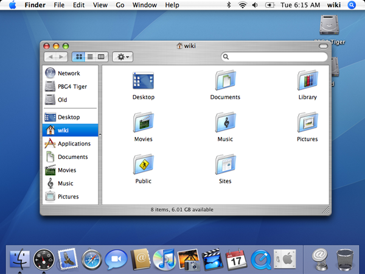
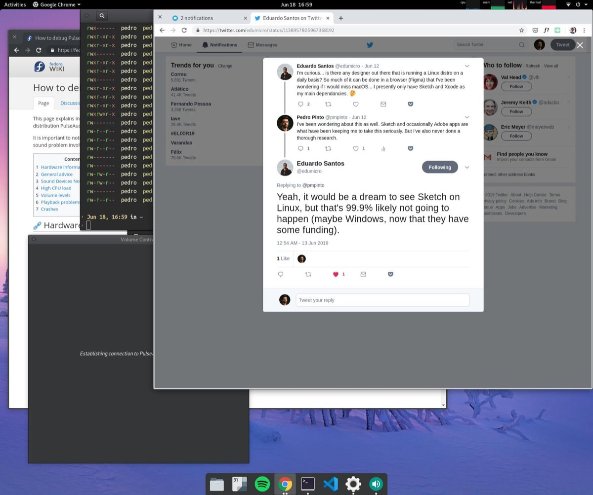
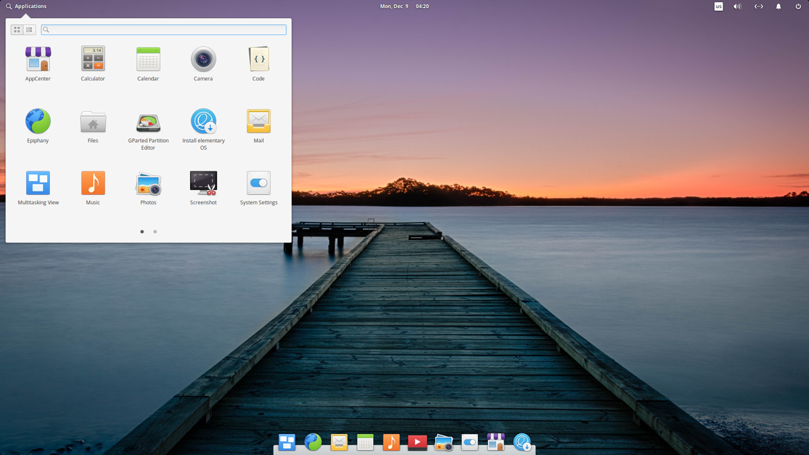

The penguin is not ready to go home yet
I gave Linux a try, twice, and these are some thoughts on the experience and why I believe it’s not quite yet ready for home users.
From Windows to Mac OS X
Roughly 15 years ago, Windows was everything I knew regarding operating systems. I had used it for years, knew the ins and outs and how to use it on a daily basis. But I was never a “power user”.
Then I got into design and naturally I started to hear and experience a lot about Apple and the Macintosh world. I bought my first MacBook Pro in 2007, and never looked back. Apple had just recently moved from PowerPC to Intel processors, and this small change would make the transition much easier for me.
Even though I remember feeling some transition pains, at the time I didn’t have a huge amount of data to deal with. I was actually about to start the time of my life where I would be producing my own data and personal files so I don’t think the transition could have been made at a better time.
A few months in, I was already pretty much used to the very user friendly although not that beautiful Mac OS X Tiger.

For a long period of time, I didn’t look elsewhere regarding operating systems. So much so, that I eventually got an iPod Classic (long live) and later an iPhone 3GS.
I was living the Apple life, and I was happy about it.
From Macintosh to Hackintosh
As most people living the “Apple life” might have noticed by now, Apple products aren’t known for their cheap price tag. Roughly 5 years after buying my first Macintosh I was looking for a desktop computer, and naturally looked at Apple desktops. But quickly realised the price tag I was willing to pay for a desktop computer wouldn’t give me a great deal at Apple. So I naively looked for a way to use Mac OS X in a non-Apple computer.
That’s when I found out about Hackintosh. I did a lot of research and took the time to pick the right components. Of course I had to go through a lot of troubles to get it properly working at the time, I would be surprised if I didn’t have to. But eventually it turned out to be a stable build.
Since then, I had repeated this process an unknown number of times, whenever I feel like the most recent macOS version brings something I would be willing to trade for the usual troubles of a new clean installation, like a system-wide dark theme.
But then I looked at Linux
At some point, I started to look for a real alternative to macOS. I can’t recall exactly what triggered this search in the first place, but I can think of a good reason from the top of my mind:
When building a hackintosh there a lot of issues you’re eventually going to deal with, even when you’re able to pick all the components for your build.
Here are some of the issues I had with recent build updates:
- Graphics
Ever since I built the first hackintosh, I used an NVIDIA GTX 660 Ti. On a recent update, probably macOS Mojave, Apple decided to not support these anymore. And there’s no driver from NVIDIA itself. Which left me with a very hot potato at hands—after some time using the computer, the graphics card would run out of memory and glitches started to pop up everywhere in the screen, which made it unusable until rebooted.
Bought a Radeon RX 580, which is supported by default, and the problem got solved. - Wi-Fi
On the most recent update, the one I’m writing this on, I didn’t have Wi-Fi. Not just signal, macOS wouldn’t recognize the network card at all. Eventually found out that I could reuse an old Kext file from a previous macOS version. Now Wi-Fi works as expected, out of the box.
But what if you want to run macOS on a non-Apple laptop?
There are certainly a lot of people that managed to successfully install macOS on a laptop, but you usually can’t swap components around if needed, and for me that’s enough to not want to go down that road.
All that’s left is Linux (because I’m not going back to Windows anymore)!
So I gave Linux a try
Last year, this urge to try Linux came to my mind again. I had previously ignored these thoughts for a very specific reason: different file systems would make it hard to jump from macOS to Linux. But it felt like this time was different.
This time, I just wanted to give it a try, more than feeling the pressure to make it work as my daily driver.
So I did some research to check which would be a good first distro for me to try and, mostly influenced by UI consistency, I installed Fedora… and got disappointed.

Most of the times, if one gets disappointed, it’s due to wrong expectations.
Back in the day, I remember people referring to Linux as that operating system where you would necessarily need to know how to use a command line to work with it. But I never imagined this would still be true in 2019. Besides, there are still a lot of visual inconsistencies throughout the system. For a visual guy like me, it’s pretty hard to ignore those.
If I recall correctly, these were the things that ultimately made me abandon Fedora:
- Not having sound at all
- Weak Wi-Fi signal
- Visual inconsistencies
- Keyboard shortcuts
- No reliable way of using APFS/HFS+ drives
A year went by…
This time I came across Elementary OS and my first thoughts were:
Finally, a good looking design distro that seems to be targeted at those who don’t want to tinker with a command line all day.

Secretly, my expectation was that this would be the Android of Linux distros.
Meaning that it’s as flexible as you want it to be, and as user friendly as you can ask for—such a high bar to begin with, but that’s where I was at.
Eventually, the curiosity took the best of me, and I installed it. I had a secondary SSD I could play with to prevent my primary OS to get affected by this. Just like I did for Fedora, I installed it on that drive and immediately started to play around with it.
Clearly this one has been taken care of a lot better, in regards to visual consistency—that’s appreciated!
At first, I didn’t have sound either. But eventually did something that fixed that.
The keyboard shortcuts was still an issue to me. I gave Kinto a try but that didn’t seem to be doing its thing correctly.
The Wi-Fi signal was still weak, and nothing I tried seemed to help. Remember, I was still using the same network card on macOS on the same computer, so I knew it was not faulty.
The Wi-Fi was so slow, I was unable to update any package or even load a website. I actually used the tethering on my phone to be able to install Google Chrome and do some updates.
Besides all this, seen as one of the most user friendly distros, I would expect to be able to install all the apps I need and configure it without the need to open a command line. And that was not the case.
Not that user friendly after all
Even though Elementary OS comes with an AppCenter full of apps and most of them are somewhat using the same visual language—which is great—it’s missing some essentials for me, so I looked for those.
For instance, VS Code.
I couldn’t find it in the AppCenter so I searched and landed at their website.
I’m presented with two options for Linux: a .deb file for Debian or Ubuntu and a .rpm file for Red Hat, Fedora or SUSE. So I search a bit and find out Elementary is based on Ubuntu, so I assume I will be fine with the .deb file.
Except that… If I remember correctly, out of the box, Elementary OS (or the file manager) has no idea what to do with these files, which I found very amusing, and cute.
Eventually found out about Eddy which takes care of installing .deb packages.
Then I searched for Spotify. And this is a great example of why I believe Linux isn’t quite there yet. Besides the fact that “They [Spotify engineers] work on it in their spare time and it is currently not a platform that we [Spotify] actively support”, it’s a lot more cumbersome to install it on Linux than on Windows or macOS. And from my experience, this is true for many other apps as well.
It usually involves running a command to install an app through snap for instance, or visiting a website such as Flathub and installing it from there, which Elementary OS apparently supports out of the box.
Although… Daniel Foré, founder of Elementary OS said that:
And I totally agree! I would much rather click a button on the AppCenter than having to download a .deb file and installing a .deb file manager to install an app.
So I wonder why didn’t Spotify, and some other apps, show up in the AppCenter in the first place. As far as I can remember, they show up, but only after installing an app from that source. It would be great to include this information in some kind of an onboarding screen.
Don’t get me wrong here, I do believe the team behind Elementary OS is doing an amazing job. But in my opinion it’s still a long way to go until I can even recommend this as a great alternative for a home computer.
Until you can configure everything you need, install all the necessary drivers and apps without ever needing to open a command line, it’s not ready for that use case.
It’s actively being enhanced, which you can tell by their blog. Chances are you will get a better experience than I did. If you can afford the headaches, by all means, give it a try!
But that’s not all!
This time, this adventure came with a very sour surprise.
For some reason, while installing Elementary OS, it assumed I would like to run it by default at boot. So it moved itself to the top of the boot options on my machine. Every time I would boot my computer, I would land at Elementary OS. Not appreciated at all!
I’m not talking about the options in the BIOS settings, those would have been easy to fix.
At first I didn’t know exactly what was happening. I did tinker around and tried a lot of stuff to bring Clover (my boot loader for macOS) back to the top. But it seemed like every time I would boot into Elementary OS, it would be back at the top of the list again.
I was genuinely fed up with this, and at some point I might have done such a huge hammering to fix it that macOS would take 7 minutes to boot—I remember overriding the config.plist file on the EFI partition without ever opening it up in the first place, for some weird reason.
Sometimes, when logging in, I would realise it wouldn’t connect to any Wi-Fi networks, so I would need to reboot, which would turn it into a 14 minutes boot—lovely as you can imagine.
I took this opportunity to do a clean install of macOS Mojave once again and ended up with what seems to be the most stable build in a long time.
For now, Linux is a thing for servers, where I’m not expecting to have a GUI in the first place.
And as I once heard, macOS is the best Linux distro there is… yet.